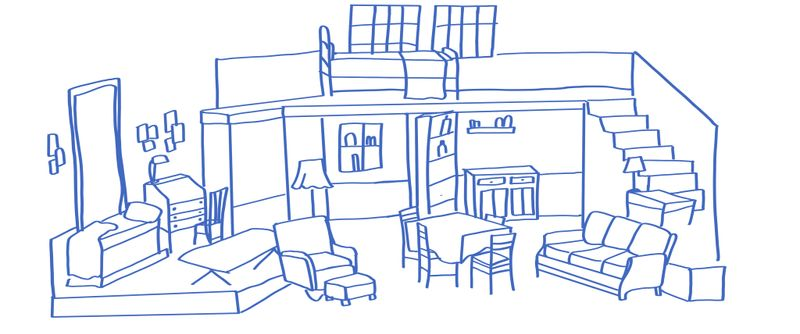
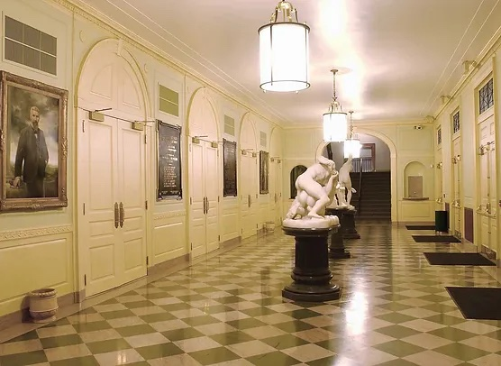

Reynolds Auditorium
I went to a play...
It was based on the Diary Anne Frank and was put on by Reynolds High School in 2014. I attended the play on a field trip and was amazed by Reynolds Auditorium. It was by far the nicest auditorium I had been in thus far. The set decorations were incredible with two separate levels and a secret bookcase door. It was beyond anything I could have imagined possible from a high school play.
I always knew I wanted to pursue the arts. It was a decision that had shaped my choice of middle school. I was also becoming interested in technical theater as a way of combining my love of art and technology. If any school was going to provide me with the opportunities to pursue those fields within high school, it was Reynolds.
I remember in eighth grade I began touring different high school options. Reynolds was the second on my list and the Auditorium had a lot to do with it. Naturally, with an asset like its auditorium, Reynolds was known for the arts. From orchestra to the visual arts and even the performing arts, Reynolds was the art school.
And that makes sense given its history...
The school and auditorium were the plan of Katharine Smith Reynolds, in honor of her late husband, R.J. Reynolds, of the R.J. Reynolds Tobacco Company. She donated the 28 acre land, known as "Silver Hill" in 1919 to the city. The auditorium is one of the oldest and largest performing centers in Winston-Salem and has served as a gathering place for residents to experience the arts. The auditorium itself has added to the city's reputation as the "City of Arts."
The auditorium has always had a somewhat interesting and mysterious history. Part of this has to do with its location. Positioned downtown, the high school was laid out in a unique way. In order to get to the gym or recreational fields, you had to take a long tunnel under a fairly busy road. So it's no surprise that Reynolds Auditorium was rumored to have an access point to tunnels that run beneath the city.
Upon recent research, I do think that there is a misconception based on the fact that the tunnel to get to the gym is technically considered one of Winston-Salem's underground tunnels. So there are underground tunnels but more like an on campus Expression Tunnel and not like catacombs under the city, like I was kind of led to believe. So there probably isn't a tunnel directly under the Auditorium.
Another interesting element of the auditorium's history is that it was once visited by Harry Hodini. On November 24, 1924, shortly after the auditorium opened, Houdini performed in the auditorium as one of its first guests. The trap door that sits on that stage to this day is named after Houdini. The stage has seen the likes of rock band R.E.M. and even the world renowned cellist Yo-Yo Ma.
Fun fact, Yo-Yo Ma's tour bus ran into one of the large brick columns at the entrance of the high school and absolutely demolished it. It's since been repaired but it made pretty big news back then and was kind of funny.
The auditorium was renovated in the early 2000s and while not all of its original features remain, such as the custom carpet piece featuring a tobacco leaf that was in honor of R.J. Reynolds and his Tobacco Co., the auditorium still holds much of its original charm. One of my favorite stories involving this renovation I actually learned while touring the high school. In the lobby of the auditorium are these three marble statues. These three statues are duplicates of famous Italian sculptures and were actually made in Italy and sent to Winston-Salem, specifically to be used in the Auditorium.
DO YOU SEE R.J. REYNOLD'S PORTRAIT? REYNOLDS AUDITORIUM IS HOME TO A NUMBER OF REYNOLDS FAMILY PORTRAITS INCLUDING KATHARINE SMITH REYNOLDS AND R.J. REYNOLDS III.
Apparently they were lost during the renovations and largely forgotten about. That is until some people were reviewing original photos of the lobby and one person remarked "I think I have those statues in my basement!" And lo and behold they actually had the original statues in their basement. The statues were then returned to their original positions, potentially missing a couple fingers, but relatively unharmed. Got to love finding random pieces of history just casually thrown in someone's basement only to be forgotten.
In the audience...
My sister began dancing in the second grade. Her dance studio had a tradition of doing a performance of the Nutcracker at Reynolds Auditorium each December. I had the opportunity to help carry my sister's costumes up to the third floor (where the youngest dancer's dressing room was located). While a long flight of stairs, it was fascinating to see just how extensive the backstage area was. Compared to my own high school, which had the dance studio directly behind the auditorium stage with two small bathrooms, the three stories of dressing rooms with multiple stations was impressive.
I always enjoyed sitting in the audience to watch my sister's performances. The Reynolds Auditorium is such a grand space, it really elevated the experience and made each recital feel extra special and important. It was such a treat getting to watch my sister dance year after year on the same stage that has hosted so many celebrities and world famous performers, knowing it was also just a high school auditorium.